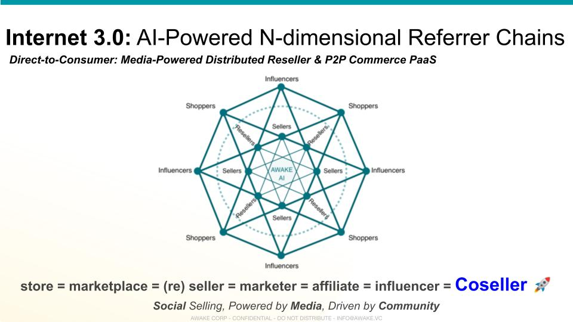

Connections
Connections
What creates a Network? If a network has nodes, then a network can be defined as a collection of nodes and networks. And if the relationship between two nodes is a connection, then a network just means a collection of connections.
Connections = Network
Your network is the collection of all your relationships. In technical terms, each relationship is a connection (with someone else) between two nodes (Identity). and all such pairs of relationships together describe the complete network.
Connecting
The primary act of introducing someone into the network, aka creating a connection between an existing node in a network and a new member of the network, is what creates and grows a network from the first node onwards.
The first network is without nodes, and the first node creates the network.

Interconnecting
When a member wants to connect with another member they are not directly connected with, a common node makes the effort of creating a new connection between the two members.
This act of interconnecting is also primary along with adding entirely new members to the network.
Referring
Interconnecting carries with it the benefit of being the referral for both sides of the connection, and any upside created because of the new connection may be shared by each side with the referral.
Referral upside is the incentive and lifeblood of commercial networks, this upside acts as a natural catalyst for network growth.
Empowering
Referrals empower the two sides of new connections. This makes interconnections valuable, and nodes that can connect someone to other desirable nodes are valuable also.
In many ways, these referral nodes represent the network itself, particularly from the perspective of the nodes desirous of connecting with particular nodes.
Co-creating
And so the referral members are part of the value co-created by connections between any two members, and thus referrals form a key part of the foundations of any business.